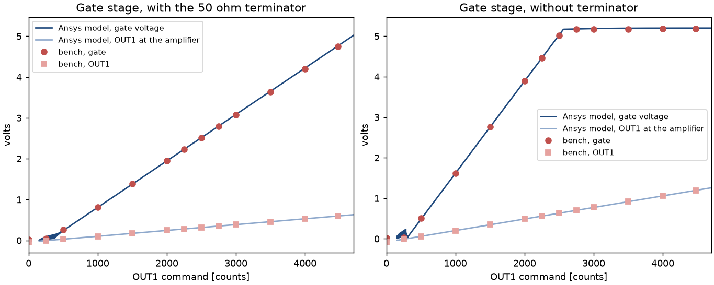
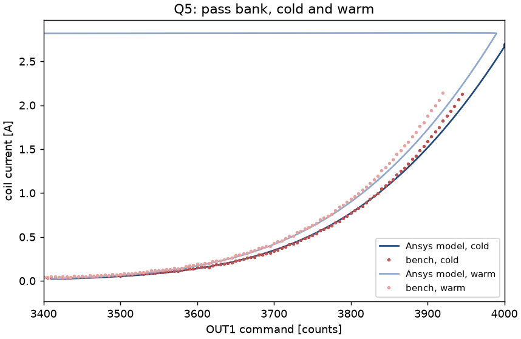
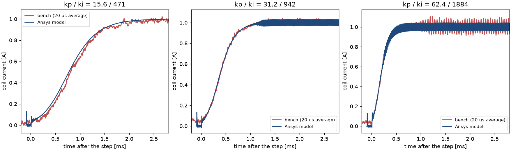
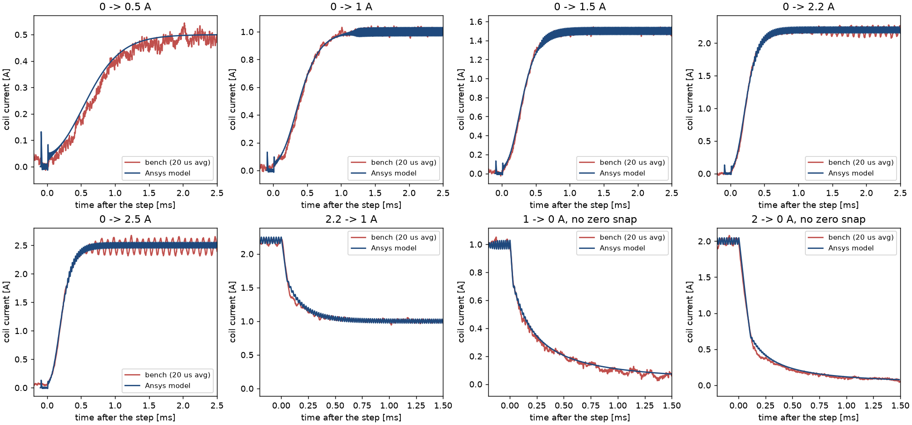
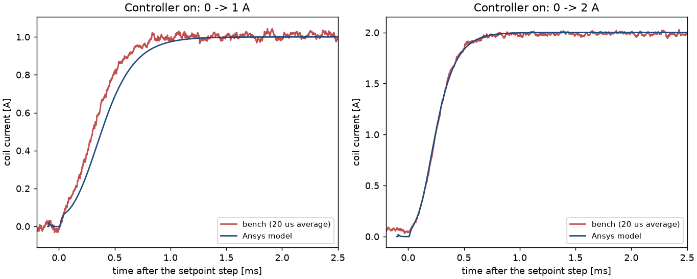
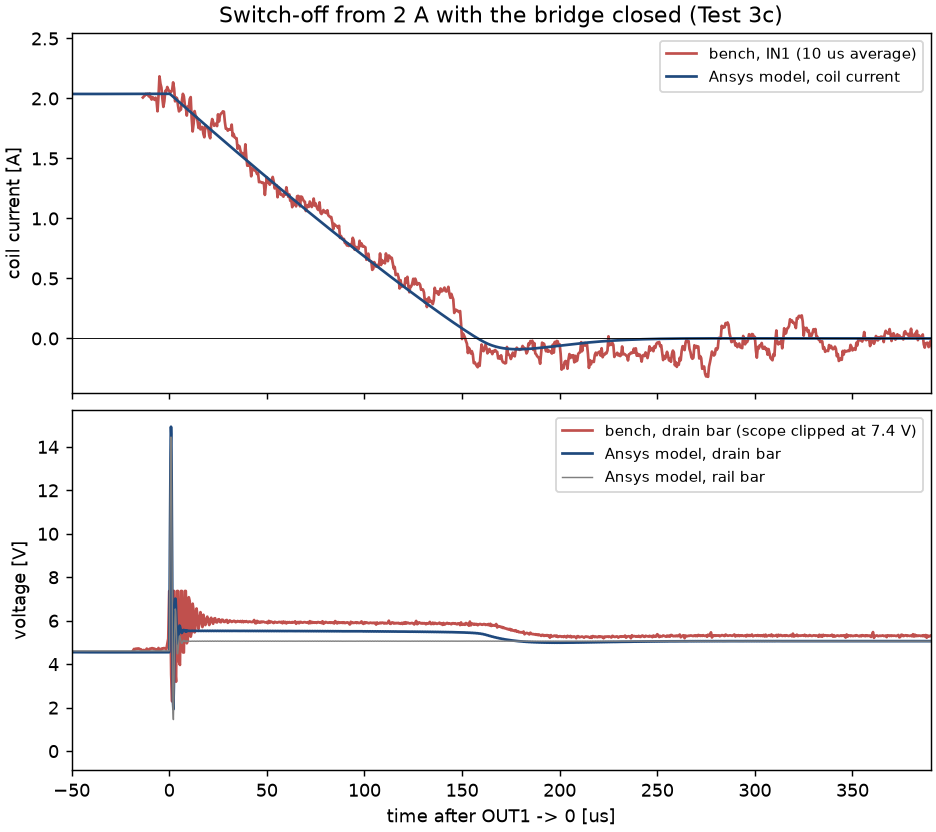
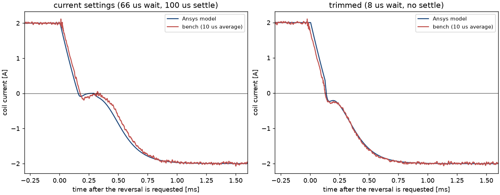
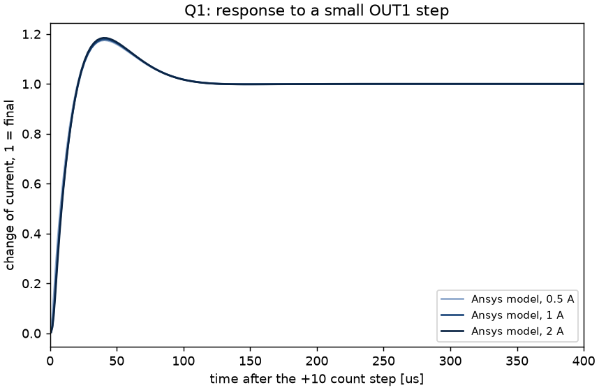
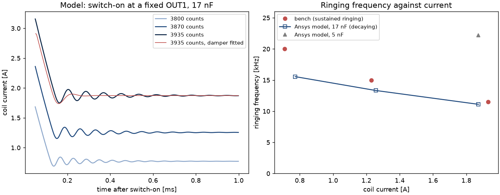
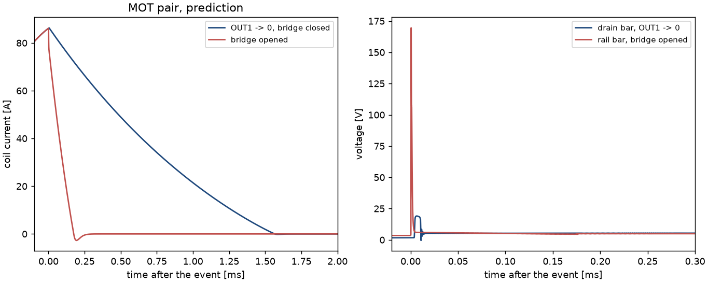

Model: ansys/coil_servo.aedt, design bench (3 A bench supply, 45 µH test coil, 3.2 Ω + 10 µF damper). Bench numbers: docs/benchtop_test_log.md and docs/lab_notes_2026-11.md (tests of 11-11 to 11-13). Regenerate with run_sims.py then compare.py.
| Test | Quantity | Ansys model | Bench | Note |
|---|---|---|---|---|
| Test 0d: safety-board lights (green / amber / red) | 1 power on, heartbeat running | on / off / on | on / off / on | |
| 2 press reset | on / off / off | on / off / off | ||
| 3 enable the bridge | on / on / off | on / on / off | ||
| 4 pull the heartbeat wire | off / off / on | off / off / on | ||
| 5 re-plug the heartbeat | on / off / on | on / off / on | ||
| 6 press reset | on / on / off | on / on / off | ||
| Reset pressed while the heartbeat is missing | bridge after the heartbeat returns | enabled again, no new cut-off | enabled again (known weakness) | press reset only with the green light on |
| Test 0f: current through the coil, both directions | coil current forward / reversed | +1.10 / -1.10 A | +1.12 / -1.12 A | bench: driven by hand, before the pass bank was in use; the model uses OUT1 = 3850 counts |
| IN1 voltage forward / reversed | +5.5 / -5.5 mV | 5 mV per amp, sign follows the current | ||
| Test 1: gate stage, with the 50 ohm terminator | OUT1 / gate at 2000 counts | 0.244 / 1.95 V | 0.244 / 1.95 V | op-amp on 5.18 V: the gate cannot go above that |
| OUT1 / gate at 4000 counts | 0.529 / 4.22 V | 0.529 / 4.20 V | op-amp on 5.18 V: the gate cannot go above that | |
| Test 1: gate stage, without terminator | OUT1 / gate at 2000 counts | 0.488 / 3.90 V | 0.489 / 3.90 V | op-amp on 5.18 V: the gate cannot go above that |
| OUT1 / gate at 4000 counts | 1.059 / 5.20 V | 1.058 / 5.18 V | op-amp on 5.18 V: the gate cannot go above that | |
| Test 3f: gate when OUT1 goes to zero | gate 4 V -> 0 | 4.5 us (90-10 %: 3.4 us) | ~4 us | set by the amplifier's 125 mA output limit into six gates |
| Q5: current against OUT1, cold transistors | current at 3700 counts | 0.35 A | 0.34 A | the model's law was fitted to the 11-11/12 scans; Q5 (11-13) is an independent check |
| current at 3800 counts | 0.77 A | 0.78 A | the model's law was fitted to the 11-11/12 scans; Q5 (11-13) is an independent check | |
| current at 3900 counts | 1.51 A | 1.59 A | the model's law was fitted to the 11-11/12 scans; Q5 (11-13) is an independent check | |
| Q5: current against OUT1, warm transistors | current at 3700 counts | 0.41 A | 0.43 A | the model's law was fitted to the 11-11/12 scans; Q5 (11-13) is an independent check |
| current at 3800 counts | 0.90 A | 0.93 A | the model's law was fitted to the 11-11/12 scans; Q5 (11-13) is an independent check | |
| current at 3900 counts | 1.72 A | 1.88 A | the model's law was fitted to the 11-11/12 scans; Q5 (11-13) is an independent check | |
| Fixed OUT1 (open loop) | current at 3800 counts | 0.77 A | 0.71 A | bench 11-12, coil lifted |
| current at 3870 counts | 1.26 A | 1.23 A | bench 11-12, coil lifted | |
| current at 3935 counts | 1.87 A | 1.93 A | bench 11-12, coil lifted | |
| current at 3950 counts | 2.04 A | 2.0 A | ||
| rail bar at 2 A | 4.61 V | 4.60 V | supply leads drop 0.2 ohm x 2 A | |
| Fixed OUT1, damper removed, datasheet capacitances | 10-20 kHz ringing at 1.9 A | none (0.0 mA p-p) | +-116 to +-165 mA at 12 kHz | see the ringing rows: appears when the drain-gate capacitance is raised |
| 3d: 0 -> 1 A, gains 15.6 / 471, no damper | time to 90 % / 98 % | 1.45 / 2.00 ms | 1.41 / 1.85 ms | |
| at the hold | steady | clean (40 mA noise) | ||
| 3d: 0 -> 1 A, gains 31.2 / 942, no damper | time to 90 % / 98 % | 0.74 / 1.01 ms | 0.73 / 1.04 ms | |
| at the hold | ripple +-31 mA at 53 kHz | clean (40 mA noise) | model: through the pass transistors' drain-gate capacitance (1 nF assumed); see the ringing section | |
| 3d: 0 -> 1 A, gains 62.4 / 1884, no damper | time to 90 % / 98 % | 0.36 / 0.44 ms | 0.38 / 0.53 ms | |
| at the hold | ripple +-41 mA at 50 kHz | oscillates at 21 kHz (86 mA) | model: through the pass transistors' drain-gate capacitance (1 nF assumed); see the ringing section | |
| Steps over the range (firmware before the zero snap, no damper) | 0 -> 0.5 A: time to 90 % / 98 % of the change | 1.18 / 1.66 ms | 1.08 / 1.36 ms | |
| 0 -> 1 A: time to 90 % / 98 % of the change | 0.74 / 1.01 ms | 0.72 / 0.95 ms | ||
| 0 -> 1.5 A: time to 90 % / 98 % of the change | 0.57 / 0.69 ms | 0.55 / 0.70 ms | ||
| 0 -> 2.2 A: time to 90 % / 98 % of the change | 0.42 / 0.56 ms | 0.44 / 0.63 ms | ||
| 0 -> 2.5 A: time to 90 % / 98 % of the change | 0.40 / 0.53 ms | - / 0.59 ms | ||
| 2.2 -> 1 A: time to 90 % / 98 % of the change | 0.28 / 0.45 ms | 0.24 / 0.34 ms | ||
| 1 -> 0 A, no zero snap: time to 90 % / 98 % of the change | 1.09 / > 1.5 ms | 0.68 / 1.22 ms | the slow last part (the reason for the zero snap): see the plot | |
| 2 -> 0 A, no zero snap: time to 90 % / 98 % of the change | 0.58 / > 1.5 ms | 0.47 / 1.49 ms | the slow last part (the reason for the zero snap): see the plot | |
| Controller on, step 0 -> 1 A | time to 90 % / 98 % | 0.74 / 1.05 ms | 0.61-0.73 / 0.81-1.04 ms | bench gains kp 31.2, ki 942 |
| overshoot | 0.0 % | 1-2.4 % | ||
| OUT1 at the hold | 3836 counts | ~3857 (fit) | ||
| Controller on, step 0 -> 2 A | time to 90 % / 98 % | 0.48 / 0.69 ms | 0.45-0.47 / 0.62-0.65 ms | bench gains kp 31.2, ki 942 |
| overshoot | 0.0 % | 1-2.4 % | ||
| OUT1 at the hold | 3946 counts | 3942-3952 | ||
| Setpoint 2 A -> 0 (zero snap) | time to 2 % (0.04 A) | 153 us | 130-140 us | rev 5 firmware |
| Step to 2.9 A, trip at 2.8 A | trip fires / peak current | yes / 2.81 A | yes / ~2.85 A | |
| OUT1 -> 0 at 2 A, bridge closed | time to zero current | 159 us | ~170 us | freewheel through the bridge diodes |
| fall rate | 12.9 mA/us | 12-13 mA/us | ||
| swing below zero (into the damper) | -0.09 A | ~ -0.2 A | bench: for ~100 us | |
| drain bar while the current falls | 5.52 V | ~5.9 V | rail + one diode drop | |
| drain bar peak at switch-off | 14.9 V | 12.1 V | model: the supply-lead inductance, caught by the 5KP12CA | |
| voltage across the coil while it falls | 0.47 V | 0.52 V | bench: 0.52 V and 13.3 mA/us give L = 37 uH | |
| OUT1 -> 0 at 1.5 A, no damper | time to zero / rate | 122 us / 12.5 mA/us | 100-160 us / 8-12 mA/us | Test 3f |
| Bridge opened at 2 A, damper fitted | time to zero current | 21 us | ~25 us | |
| swing below zero | -0.34 A | ~ -0.3 A | ||
| drain bar while the coil discharges | -0.00 V | ~ -0.5 V | model: the bank conducts backwards through its channel, hardly any drop | |
| Bridge opened at 2 A, no damper | time to zero current | 12 us | 10-13 us | |
| drain bar while the coil discharges | -0.06 V | ~ -0.5 V | model: the bank conducts backwards through its channel, hardly any drop | |
| rail bar jump | +25 V for < 1 us | +2.5 to +3.2 V for ~10 us | DISAGREES: see 'What does not match' below | |
| 3g: reversal +2 -> -2 A, current settings (66 us wait, 100 us settle) | current reaches zero | 160 us | 141 us | sign of the setpoint and flip sent together |
| 90 % of -2 A | 758 us | 740 us | ||
| within 2 % of -2 A | 0.96 ms | 0.95 ms | ||
| 3g: reversal +2 -> -2 A, trimmed (8 us wait, no settle) | current reaches zero | 137 us | 130 us | sign of the setpoint and flip sent together |
| 90 % of -2 A | 603 us | 585 us | ||
| within 2 % of -2 A | 0.81 ms | 0.81 ms | ||
| 3g: dead time at the bridge transistors | outgoing pair below threshold / incoming pair above threshold | 0.53 us / 2.24 us after enable drops | not measured yet (gate voltages need a floating probe) | PREDICTION: 1.7 us with no pair conducting; 1.0 us each side was measured at the Red Pitaya pins |
| current at the moment of the flip | -0.09 A | +0.13 / -0.29 A | inside the +-0.49 A window | |
| Q1: +10 counts of OUT1 at a hold (controller off, damper fitted) | at 0.5 A: current per count | 4.3 mA | 5.1 (Q1), 3.6 (Q5) mA | |
| at 0.5 A: resonance, damping | 14.0 kHz, 0.48 | 16.3 kHz, 0.48 | model: the same at every current; bench: falls with current | |
| at 1 A: current per count | 7.1 mA | 7.7 (Q1), 8.6 (Q5) mA | ||
| at 1 A: resonance, damping | 13.8 kHz, 0.48 | 9.7 kHz, 0.36 | model: the same at every current; bench: falls with current | |
| at 2 A: current per count | 11.5 mA | 13.4 (Q1), 13.2 (Q5) mA | ||
| at 2 A: resonance, damping | 14.2 kHz, 0.47 | 7.7 kHz, 0.22 | model: the same at every current; bench: falls with current | |
| Ringing at a fixed OUT1, no damper, drain-gate capacitance set to 17 nF | 3800 counts (0.77 A): frequency | 15.6 kHz | 20 kHz | frequency and its fall with current reproduced |
| 3800 counts: does it keep going? | no: dies away in ~1 ms (+-0 mA after 2 ms) | yes: +-80 mA all the time | DISAGREES: the model has the resonance but nothing keeps it going | |
| 3870 counts (1.26 A): frequency | 13.3 kHz | 15 kHz | frequency and its fall with current reproduced | |
| 3870 counts: does it keep going? | no: dies away in ~1 ms (+-0 mA after 2 ms) | yes: +-110 mA all the time | DISAGREES: the model has the resonance but nothing keeps it going | |
| 3935 counts (1.87 A): frequency | 11.1 kHz | 11.5 kHz | frequency and its fall with current reproduced | |
| 3935 counts: does it keep going? | no: dies away in ~1 ms (+-0 mA after 2 ms) | yes: +-150 mA all the time | DISAGREES: the model has the resonance but nothing keeps it going | |
| 3935 counts with the damper | +-3 mA after 0.3 ms | gone (tone 124 -> 4.9 mA) | ||
| Heartbeat wire pulled at a 2 A hold | bridge cut after the last heartbeat edge | 7.6 ms | 7.6 ms | monostable 220 kOhm / 100 nF |
| OUT1 afterwards | winds up to 4100 counts | 4100 (the clamp) | the firmware cannot see the safety board | |
| IN1 signal lost at a 2 A hold | peak coil current | 4.4 A | 4.7-5 A (11-12 surge) | supports the lost-IN1 explanation |
| rail sag | 4.6 -> 0.0 V | 4.3 -> 1.9 V | bench supply in current limit | |
| MOT PREDICTION: OUT1 -> 0, bridge closed | start current / time to zero | 86 A / 1.56 ms | (not built) repo model ~1.3 ms from 100 A | bank law extrapolated |
| drain bar peak | 19.1 V | - | 5KP12CA clamps | |
| MOT PREDICTION: bridge opened at current | start current / time to zero | 86 A / 175 us | (not built) offline estimate 182 us | |
| rail bar peak | 170 V | (not built) offline estimate 111-113 V | do not trust: the same model over-predicts this spike on the bench |
| Log section | Bench test | In the model? | Remark |
|---|---|---|---|
| 0a | Transistor thresholds | no | single-transistor bench measurement; its results are inputs of the model |
| 0b, 0d | Safety-board light sequence | yes | all six steps |
| 0c | First load of the new firmware | no | firmware and software |
| 0e | Controller test on a cable | no | firmware only, no power stage (tested in sim/) |
| 0f | Bridge and current sensor driven by hand | yes | both current directions |
| 1, 1b | Gate stage: OUT1 to gate voltage, with and without terminator | yes | |
| 1 | Gate voltage after the amplifier loses power | no | the amplifier's supply is an ideal source in the model |
| 2 | Current sensor zero and offsets | no | offsets, drift and noise are not modelled |
| 3 day 1, Q5 | Current against OUT1, cold and warm | yes | warm = lower threshold; warming up itself is not modelled |
| 3c | Current scale against the ammeter | no | a calibration of the real sensor chain |
| 3d | Controller settings: steps at three gains, 2 A, 2.5 A | yes | |
| 3e, Q6 | Over-current trip | yes | the trip level and delay; not the switch-off spikes on IN1 (pickup) |
| 3f | Switch-off with the bridge closed | yes | with and without damper |
| 3g | Flips and reversals | partly | one ordering (sign and flip together) and the trimmed fast one; the firmware's own sequence logic is not in the model |
| 3g | Dead time | partly | the Red Pitaya timing is an input; the model predicts the bridge gate voltages, not yet measured |
| 3h | Safety-board cut-off while current flows | yes | bridge opening and the 7.6 ms time-out |
| 3i | Steadiness of a held current, 10 minutes | no | needs noise, drift and heating |
| extra | Steps over the range, up and down | yes | eight steps |
| damper | Ringing with and without the damper | partly | frequencies reproduced with a larger drain-gate capacitance; not sustained |
| LEM inside | Switch-off, bridge opening, pulse | yes | |
| LEM inside | The 5 A surge | yes | as a lost IN1 signal (one possible cause) |
| rev 5 | Zero snap on a zero setpoint | yes | |
| day 3 D1 | Stop and trip around a flip | partly | stop = the zero snap run; not the firmware's handling of orderings |
| day 3 D2-D6 | Arm signal, ramp limits, 50 shots, two programs, PC connection lost | no | firmware and software behaviour |
| noise | Zero-current noise reference | no | no noise in the model |
| fastest | Fastest reversal | yes | |
| Q1 | Safety margin of the controller (small steps) | partly | current per count yes; the measured resonance moving with current no |
| Q2, Q3, Q4 | 45 min hold, 50 min zero reading, 1000 shots | no | drift, heating and statistics |
| Q7, Q8 | Earlier computer models (bank law, MOT damper, surge) | yes | the bank law is built in; MOT predictions in the 'mot' design |

Test 1: OUT1 swept upward, voltage at the amplifier input and at the gates. Without the terminator OUT1 doubles and the gate runs into the amplifier's 5.18 V supply.

Q5: slow OUT1 sweep with the controller off. Warm = the same transistors after 20 minutes at ~1.5-1.8 A (in the model: threshold 24 mV lower).
Current for a fixed OUT1 command (controller off). The model uses the bank law fitted to the 11-11/12 bench scans, so this mainly checks that the circuit around the bank is right.

3d: the same 0 -> 1 A step at half, chosen and double controller gains (before the damper was fitted).

Setpoint steps up and down over the bench range, controller on, no damper. The model's hold shows a small fast ripple that the bench does not (see the ringing section).

Setpoint steps with the controller on, bench gains (kp 31.2 counts/A, ki 942 counts/(A ms)).

OUT1 set to zero at 2 A with the bridge left closed: the coil current circulates through the bridge and dies away.

Bridge opened at 2 A, damper fitted: all four bridge switches turned off while current flows (what the safety board does).

Bridge opened at 2 A, no damper: all four bridge switches turned off while current flows (what the safety board does).

3g: full reversal +2 -> -2 A. The model does not contain the firmware's flip sequence; the bridge, polarity and enable lines are played with the firmware's timing (zero window +-0.49 A, wait, 1 us off before and after the polarity change, settling pause).

Q1, model only: response of the coil current to a 10-count step of OUT1 with the controller off and the damper fitted.

The 10-20 kHz ringing. With the pass transistors' drain-gate capacitance raised from the 1 nF datasheet value (given at 25 V) to 17 nF, the model rings at the bench's frequencies and follows the same fall with current, but the ringing dies away instead of continuing.

Model only. The safety board opens the bridge 7.6 ms after the last heartbeat edge; the controller, seeing no current, turns OUT1 up to its clamp. Pressing reset now would re-close the bridge at full drive (the known operating rule).

Model only. With IN1 lost the controller sees the current fall and turns the bank up; the true current surges until the bench supply runs out. The trip cannot fire because it uses the same lost signal.

PREDICTION for the two MOT coils on the SE-600-5 (not built). The pass-bank law is extrapolated from 2.5 A to 100 A and the supply's output capacitance is assumed.